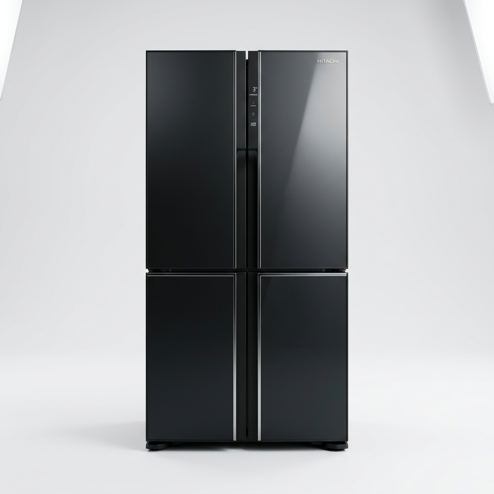
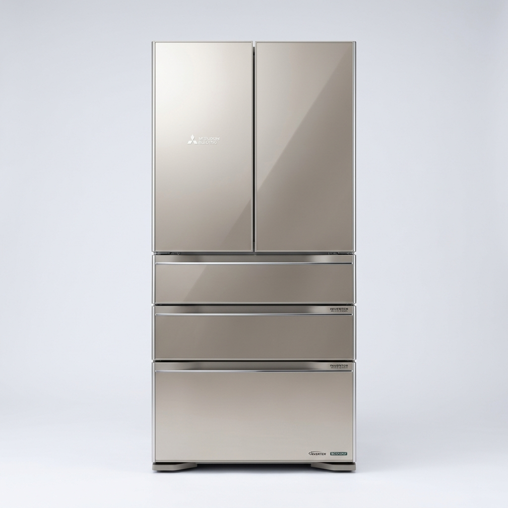

เทียบละเอียด Hitachi Multi-Door 4 ประตู 19.9 คิว (R-WB640VF) กับ Mitsubishi Electric 4 ประตู 20.5 คิว (MR-LA70ER) อันไหนดีกว่ากันเพราะอะไร พร้อมตารางเรดาร์เช็คราคาถูกสุดทุกช่องทาง ส่วนต่าง 3,500 บาท
🏆 ผู้ชนะคะแนนภาพรวม (Hitachi Multi-Door 4 ประตู 19.9 คิว (R-WB640VF) — 9.7/10): ดีกว่าตู้เย็นทุกยี่ห้อสำหรับคนชอบทำอาหาร เพราะมีปั๊มดูดอากาศในช่อง Vacuum Compartment เหลือความดัน 0.8 atm ทำให้เก็บเนื้อหมู เนื้อวัว ปลาดิบ ได้สดฉ่ำนาน 7 วันโดยไม่ต้องแช่แข็ง ไม่เสียรสชาติและไม่ต้องรอละลายน้ำแข็ง!
💰 ทางเลือกคุ้มค่าประหยัดงบ (Mitsubishi Electric 4 ประตู 20.5 คิว (MR-LA70ER)): เริ่มต้นเพียง ฿31,490 ประหยัดเงินในกระเป๋าได้ทันที ฿3,500

เอกสิทธิ์ช่องแช่สุญญากาศ Vacuum Compartment (-1°C) เนื้อสดไม่เป็นน้ำแข็ง หั่นได้ทันที

สมองกล Neuro Inverter เรียนรู้พฤติกรรมผู้ใช้ ประหยัดไฟเบอร์ 5 ห้าดาว ทนทานนับสิบปี
| หัวข้อการเปรียบเทียบ | Hitachi Multi-Door 4 ประตู 19.9 คิว (R-WB640VF) | Mitsubishi Electric 4 ประตู 20.5 คิว (MR-LA70ER) |
|---|---|---|
| คะแนนรวม yespec Score | 9.7 / 10 | 9.6 / 10 |
| ความจุรวมภายใน (ลิตร) | 569 | 580 ดีกว่า |
| ค่าไฟเฉลี่ยต่อปี กฟผ. (บาท - ยิ่งน้อยยิ่งดี) | 1,950 | 1,780 ดีกว่า |
| เทคโนโลยีแช่เนื้อสัตว์ไม่เป็นน้ำแข็ง (เต็ม 10) | 9.9 ดีกว่า | 9.5 |
| การกำจัดกลิ่นปนเปื้อนและเชื้อโรค (เต็ม 10) | 9.7 ดีกว่า | 9.5 |
| ความทนทานคอมเพรสเซอร์และอะไหล่ (เต็ม 10) | 9.6 | 9.9 ดีกว่า |
| ราคาสุทธิถูกสุดวันนี้ | ฿34,990 | ฿31,490 |